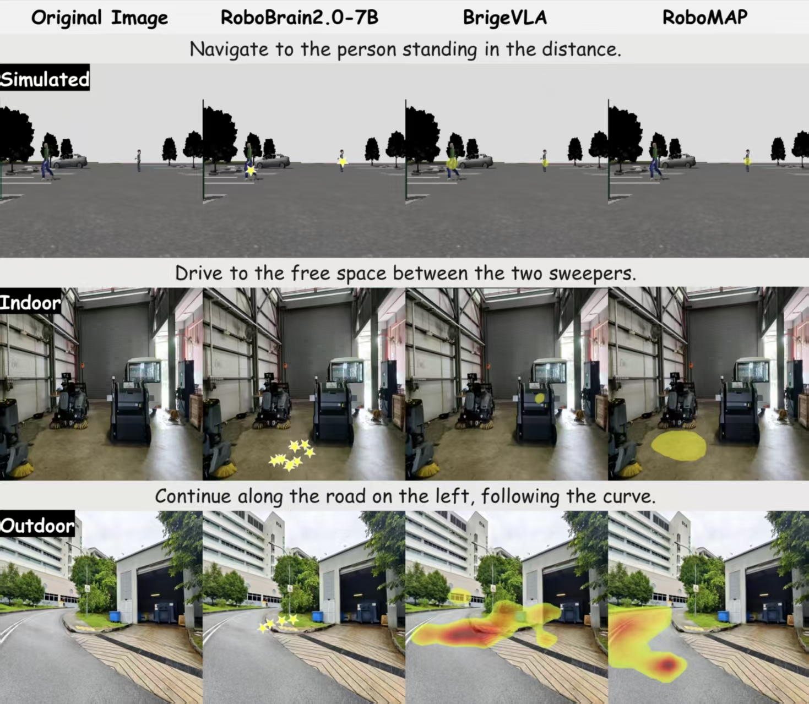

Framework Overview

The overall architecture of our framework.
Abstract
Many language-guided robotic systems rely on collapsing spatial reasoning into discrete points, making them brittle to perceptual noise and semantic ambiguity. To address this challenge, we propose a framework that represents spatial targets as continuous, adaptive affordance heatmaps. This dense representation captures the uncertainty in spatial grounding and provides richer information for downstream policies, thereby significantly enhancing task success and interpretability. Our method surpasses the previous state-of-the-art on a majority of grounding benchmarks with up to a 50x speed improvement, and achieves an 82% success rate in real-world manipulation. Across extensive simulated and physical experiments, it demonstrates robust performance and shows strong zero-shot generalization to navigation.
Results and Analysis
Our method demonstrates superior qualitative performance on challenging spatial grounding instructions by generating coherent heatmaps for ambiguous regions. It also shows strong zero-shot generalization capabilities across diverse environments, robotic platforms, and even extends to navigation tasks in unseen settings. Quantitatively, our model achieves state-of-the-art performance on a majority of standard benchmarks while achieving a substantial increase in inference speed.
Benchmark Performance

Simulation Environment

Real-World Generalization

Inference Efficiency

Qualitative Visualization

Zero-Shot Navigation
Real-World Execution

Place the right banana onto the right plate.

Put the bitter gourd on the left plate.

Move the bottle into the dustpan.

Put the corn into the bottom basket.

Place the corn in the upper basket.

Move the fish to the board.

Lay the knife beside the plate.

Put the pepper in the bottom basket.

Move the pepper onto the left plate.

Place the spoon to the left of the plate.

Put the spoon down near the plate.

Move the trash into the dustpan.